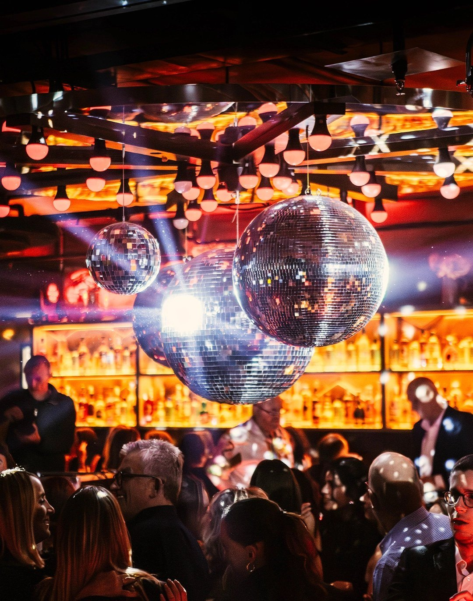
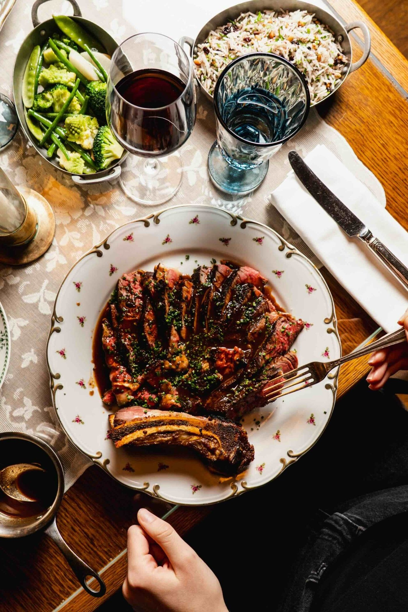
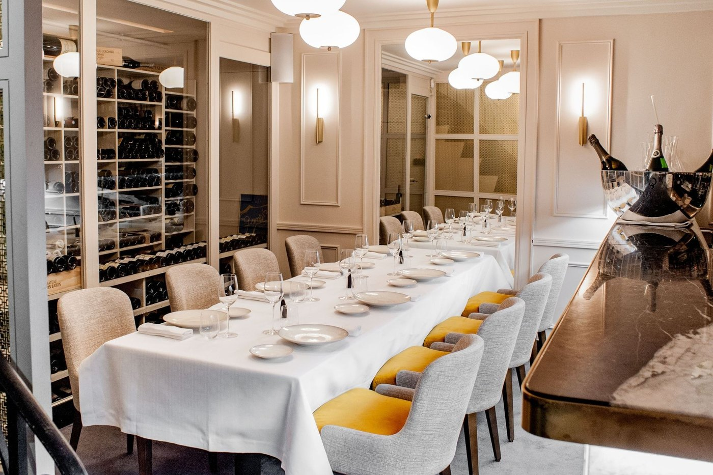
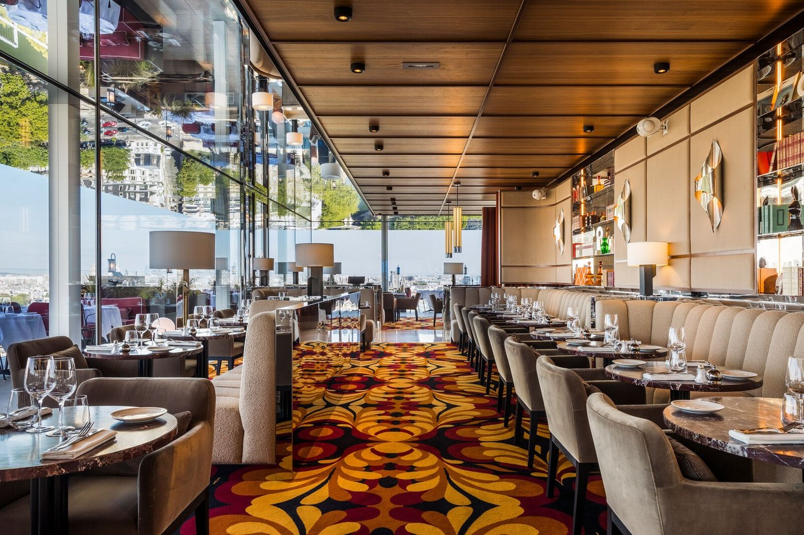
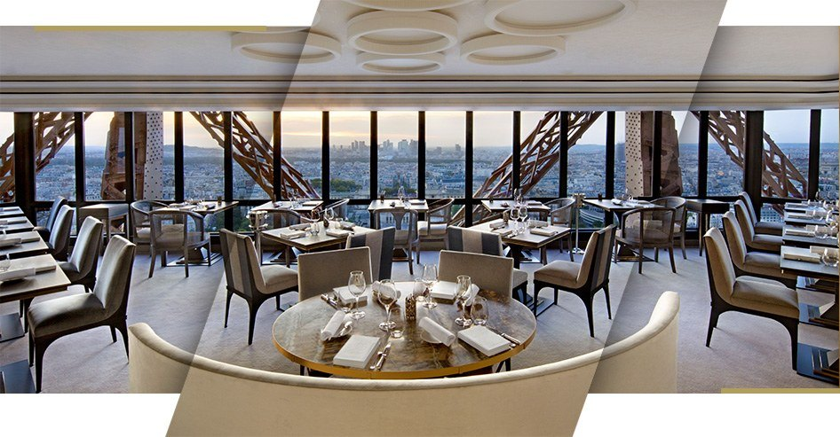

Restaurant anniversaire à Paris : 8 tables en 2026
Du menu à 25 € rue Linois au menu à 430 € avenue Gabriel. Avec la seule question qui compte vraiment quand on réserve pour un anniversaire : jusqu'à quelle heure la maison sert, et peut-on y être plus de quatre.

Un anniversaire n'est pas un dîner. C'est un dîner avec des contraintes que les sélections en ligne ne mentionnent jamais : combien de personnes la salle accepte, jusqu'à quelle heure elle sert, et si l'on peut avoir une pièce à soi. Voici huit tables triées sur ces critères-là, avec les prix relevés sur les cartes publiées.
L'essentielFêter un anniversaire à Paris en 2026
- Trois adresses seulement conviennent à un groupe : Il Camino et sa salle privatisable, le Bistrot Podium et son dancefloor, Boubalé et ses plats à partager.
- Le déjeuner divise la note par deux dans les maisons étoilées : 158 € au Gabriel contre 330 à 430 € le soir.
- L'Arôme ferme le samedi et le dimanche et prend sa dernière commande à 21 h 30 : ce n'est pas une table de fin de soirée.
- Le Jules Verne se réserve trois mois avant, les créneaux du coucher de soleil partent en quelques minutes.
Ce que nous avons vérifié
Nous avons repris chaque adresse, chaque horaire et chaque prix aux cartes et aux pages officielles des maisons, et au Guide Michelin 2026. Deux adresses ne publient pas leurs tarifs, Boubalé et Il Camino : nous ne leur en prêtons aucun.
Trois corrections méritent d'être signalées d'emblée. Il Camino est au 43 rue des Petites Écuries, dans le 10e, alors que les sélections laissent souvent son adresse en blanc. Boubalé n'est pas une table levantine mais ashkénaze, ce qui change entièrement ce qu'on y commande. Et les tarifs du Gabriel, souvent donnés à 190-240 €, vont en réalité de 158 € au déjeuner à 430 € le soir. Le reste relève des critères de notre grille.
Les 8 tables
-
01
Bistrot Podium
Paris 15e · Bistrot festif, Glenn Viel
Musique live du jeudi au samediLa salle du Bistrot Podium, rue Linois. Photo Bistrot Podium. C'est le seul restaurant de cette page qui assume de faire danser ses clients. Glenn Viel, trois étoiles à L'Oustau de Baumanière, a monté cette adresse avec les Bistrots pas Parisiens au 2 rue Linois : boules à facettes, lumière orange, répertoire disco des années 1970 et 1980.
L'ambiance monte en trois temps. Le service normal du dîner, puis la musique live du jeudi au samedi, puis le dancefloor à partir de 23 h, du mardi au samedi. C'est cette progression qui en fait une adresse d'anniversaire : on y dîne, puis on y reste.
Les prix relevés sur la carte : 25 € le menu du midi, 60 € l'entrée-plat-dessert du soir, du mardi au samedi. Un service de snacking couvre le creux de l'après-midi, de 15 h à 19 h. Les 40 € du week-end qu'on lit ailleurs ne correspondent à aucune ligne de la carte.
Pour qui ? Les groupes, les anniversaires qui ne veulent pas finir à 23 h, ceux qui préfèrent la fête à la performance. Ouvert du lundi au samedi de 9 h à 2 h.
- Adresse2 rue Linois, 75015 Paris
- Téléphone04 12 44 00 08
- Prixmenu du midi à partir de 25 € ; entrée, plat, dessert 60 € le soir
- Ouverturedu lundi au samedi 9 h à 2 h, dimanche 9 h à 19 h ; dancefloor du mardi au samedi dès 23 h
-
02
Boubalé
Paris 4e · Cuisine ashkénaze, Le Grand Mazarin
Assaf Granit
Une table de Boubalé, rue de la Verrerie. Photo Boubalé, Le Grand Mazarin. Une correction s'impose d'entrée, parce qu'elle change tout ce qu'on vient chercher ici : Boubalé n'est pas une table levantine. C'est une maison ashkénaze, c'est-à-dire d'Europe centrale et orientale, que le chef israélien étoilé Assaf Granit a ouverte dans l'hôtel Le Grand Mazarin, à l'angle de la rue de la Verrerie et de la rue des Archives.
Le nom le dit : boubalé est un mot yiddish, une tendresse de grand-mère, quelque chose comme « ma petite poupée ». La carte suit, entre Europe de l'Est et Méditerranée, dans une salle au décor chargé et chaleureux, avec un jardin d'hiver.
C'est l'adresse de cette page où l'on partage le plus : les plats arrivent au milieu de la table et la soirée se construit autour. Pour un anniversaire à six ou huit, c'est un format qui fonctionne mieux qu'un menu imposé.
Pour qui ? Les tablées du Marais, les anniversaires où l'on veut manger avec les mains et rester tard.
- Adresse17 rue de la Verrerie, 75004 Paris, hôtel Le Grand Mazarin
- ChefAssaf Granit
- Cuisineashkénaze revisitée, plats à partager
- Cartenon publiée en ligne
-
03
Il Camino
Paris 10e · Italien, disco room privatisable
Salle privatisableL'adresse circule mal et le brief des sélections en ligne la laisse souvent en blanc : Il Camino est au 43 rue des Petites Écuries, dans le 10e, et non dans le 11e. C'est un italien de quartier, carrelage de céramique, nappes blanches, flammes visibles depuis la salle.
Son intérêt pour un anniversaire tient en deux mots : la disco room, une salle en sous-sol privatisable, que la maison réserve aux groupes. C'est la solution la moins chère de cette page pour avoir sa propre salle, très loin des tarifs d'une privatisation d'hôtel.
Le reste est une trattoria qui tient sa ligne, avec un rendez-vous hebdomadaire, la Carbonara Night du mardi.
Pour qui ? Les groupes qui veulent une salle à eux sans budget de banquet. Ouvert du mardi au samedi, le soir uniquement, de 19 h à minuit ; la maison n'a pas de site officiel et se contacte par téléphone ou par Instagram.
- Adresse43 rue des Petites Écuries, 75010 Paris
- Ouverturedu mardi au samedi, 19 h à minuit
- Pour les groupesdisco room privatisable en sous-sol
- Bon à savoirpas de site officiel ; carte non publiée en ligne
-
04
Lapérouse
Paris 6e · Salons privés, depuis 1766
260 ans en 2026
La devanture de Lapérouse, quai des Grands Augustins. Photo Lapérouse. Pour un anniversaire à deux ou à six, c'est l'adresse de cette page qui offre le meilleur rapport entre le décor et l'intimité. La maison a ouvert en 1766 et fête ses 260 ans ; ses salons privés du premier étage sont d'anciennes chambres de domestiques converties par le premier propriétaire, et ils existent toujours, miroirs gravés compris.
Elle a rouvert après restauration avec Jean-Pierre Vigato en cuisine et Christophe Michalak à la pâtisserie : ce n'est pas une carte figée dans son décor.
Les prix sont publiés et permettent de calibrer la soirée : entrées de 29 à 46 €, plats de 34 à 105 €, prix nets service inclus. La ratatouille est à 34 €, le chateaubriand à 69 €, le parmentier de canard à la truffe noire à 85 €. Une addition peut donc aller du simple au triple selon les lignes choisies.
Pour qui ? Les anniversaires qui se célèbrent à voix basse. Demandez explicitement un salon privé à la réservation, sinon vous serez en salle.
- Adresse51 quai des Grands Augustins, 75006 Paris
- CuisineJean-Pierre Vigato ; pâtisserie Christophe Michalak
- Carteentrées de 29 à 46 €, plats de 34 à 105 €, service inclus
- À demanderun salon privé, à préciser lors de la réservation
-
05
L'Arôme
Paris 8e · Thomas Boullault
1 étoile Michelin depuis 2009
La salle de L'Arôme, rue Saint-Philippe du Roule. Photo L'Arôme. Thomas Boullault tient cette maison du 8e et son étoile depuis 2009, ce qui en fait l'une des étoiles les plus stables de Paris. La salle est claire, la cave visible, le service sans raideur : le chef passe en salle, ce qui est rare à ce niveau.
Les tarifs sont publiés, et le déjeuner est le vrai point d'entrée : le Menu du Chef est à 160 € en quatre temps. Le soir, deux formules seulement, le Menu Signature à 175 € et le Menu Carte Blanche à 230 €, tous deux servis pour toute la table, avec le chariot de fromages en supplément à 29 €.
Deux contraintes à connaître avant de fixer une date d'anniversaire : la maison ferme le samedi et le dimanche, et la dernière commande du soir est prise à 21 h 30. Le service se termine tôt pour une soirée de fête.
Pour qui ? Les petits groupes, six à dix personnes, qui veulent une vraie table gastronomique sans le protocole d'un palace. Comme les menus sont servis pour toute la table, l'accord doit se faire à l'avance.
- Adresse3 rue Saint-Philippe du Roule, 75008 Paris
- Téléphone01 42 25 55 98
- MenusMenu du Chef 160 € au déjeuner ; Signature 175 € et Carte Blanche 230 € au dîner
- Ouverture12 h à 14 h et 19 h 30 à 21 h ; fermé samedi et dimanche
-
06
Bonnie
Paris 4e · 15e et 16e étages du SO/ Paris
Rooftop entièrement vitré
La salle de Bonnie, au SO/ Paris. Photo Bonnie, SO/ Paris. Aux 15e et 16e étages du SO/ Paris, et non au seul dernier étage, Bonnie réunit un restaurant, un bar et un club : c'est le seul club de la capitale doté d'un rooftop entièrement vitré. La maison appartient au groupe Paris Society.
La carte est celle d'une brasserie chic : linguine au tartare de langoustine, bar au beurre blanc truffé, entrecôte Black Angus. Les prix relevés placent les plats à partager entre 19 et 38 €, les entrées entre 18 et 55 € et les plats entre 34 et 69 €. Le caviar de Sologne à 250 € les 50 grammes est la ligne qui fait grimper les additions qu'on lit ailleurs.
L'articulation est le point à comprendre pour un anniversaire : le restaurant sert midi et soir tous les jours, mais le club n'ouvre que du mercredi au samedi, de 23 h à 5 h. Un anniversaire un mardi n'aura pas la même soirée qu'un vendredi.
Pour qui ? Les anniversaires qui veulent enchaîner dîner et nuit sans changer d'adresse, et ceux qui viennent pour la vue autant que pour l'assiette.
- Adresse10 rue Agrippa d'Aubigné, 75004 Paris, SO/ Paris
- Téléphone01 78 90 74 74
- Carteentrées de 18 à 55 €, plats de 34 à 69 €
- Ouverturerestaurant tous les jours midi et soir ; club du mercredi au samedi, 23 h à 5 h
-
07
Le Jules Verne
Paris 7e · Deuxième étage de la tour Eiffel
2 étoiles Michelin 2026
La salle du Jules Verne, au deuxième étage de la tour Eiffel. Photo Le Jules Verne. Frédéric Anton, cuisinier de l'année 2025 pour Gault&Millau, tient cette table à 125 mètres, au deuxième étage de la tour, desservie par un ascenseur privé. Deux étoiles au Guide Michelin 2026.
Trois formules publiées : un menu Carte à 190 € au déjeuner, puis les menus dégustation, cinq plats à partir de 305 € et sept plats à partir de 345 €, midi et soir. Le déjeuner est donc la seule entrée sous les trois cents euros.
Pour un anniversaire, deux contraintes pèsent lourd. Les réservations ouvrent quatre-vingt-dix jours à l'avance et les créneaux du coucher de soleil partent en quelques minutes : il faut donc caler la date trois mois avant. Et la veste est obligatoire pour les hommes.
Pour qui ? L'anniversaire qui se prépare comme un événement, à deux ou à quatre. Ce n'est pas un lieu de groupe.
- Adressetour Eiffel, 2e étage, avenue Gustave Eiffel, 75007 Paris
- Distinction2 étoiles au Guide Michelin 2026
- MenusCarte 190 € au déjeuner ; dégustation 305 € en 5 plats, 345 € en 7
- Réservationouverte 90 jours à l'avance ; veste obligatoire
-
08
Le Gabriel
Paris 8e · La Réserve Paris
3 étoiles MichelinLa table la plus distinguée de cette page, et la seule à trois étoiles : Jérôme Banctel les a obtenues le 18 mars 2024. La salle est petite, habillée de cuirs dorés espagnols et de parquet de Versailles, dans un hôtel particulier Napoléon III réhabilité par Jacques Garcia.
Une précision qui compte pour un anniversaire : les tarifs souvent annoncés, 190 à 240 €, ne correspondent à rien. Au déjeuner, le menu Escale est à 158 € en quatre services et à 230 € en cinq ; le menu Virée en sept services est à 330 € et la carte revient à environ 250 €. Au dîner, il ne reste que les grands menus, Virée ou Périple, à 330 € en sept services et 430 € en neuf.
Le déjeuner à 158 € est donc, très concrètement, la façon la moins chère de fêter un anniversaire dans un trois-étoiles parisien.
Pour qui ? L'anniversaire qui se prépare des semaines à l'avance, à deux ou à quatre. La salle est trop petite pour un groupe.
- AdresseLa Réserve Paris, 42 avenue Gabriel, 75008 Paris
- Distinction3 étoiles au Guide Michelin depuis mars 2024
- ChefJérôme Banctel
- Menusdéjeuner de 158 à 330 € ; dîner 330 € en 7 services et 430 € en 9

Les trois questions à poser avant de réserver
Combien serons-nous ? C'est le critère qui élimine le plus vite. Le Gabriel et Le Jules Verne ont de petites salles et des menus construits pour deux à quatre personnes : au-delà, on gêne la maison et on gâche la soirée. À l'inverse, Il Camino, Podium et Bonnie sont dimensionnés pour les tablées.
Jusqu'à quelle heure ? Un anniversaire qui commence à 20 h 30 dans une maison dont la dernière commande est à 21 h 30 se termine à 22 h 30. C'est le cas de L'Arôme, et c'est parfait si l'on enchaîne ailleurs, mauvais si l'on comptait rester. Podium sert jusqu'à 2 h, Bonnie garde son club ouvert jusqu'à 5 h du mercredi au samedi.
Faut-il une salle à soi ? Trois formules coexistent et n'ont rien à voir : la disco room d'Il Camino, en sous-sol, pour un groupe qui veut du bruit ; les salons privés de Lapérouse, à l'étage, pour six personnes qui veulent du silence ; et la privatisation d'un espace chez Bonnie ou Podium. Aucune de ces maisons ne la propose en ligne : il faut appeler.
Le déjeuner, l'angle mort des anniversaires
C'est la vraie information de cette page. Dans les trois maisons étoilées, l'écart entre le service du midi et celui du soir dépasse la moitié du prix, pour la même cuisine et la même salle.
Au Gabriel, trois étoiles, le menu Escale en quatre services est à 158 € ; le soir, il n'y a plus que des menus à 330 et 430 €. À L'Arôme, le Menu du Chef est à 160 € au déjeuner contre 175 et 230 € au dîner. Au Jules Verne, le menu Carte est à 190 € quand les dégustations montent à 305 et 345 €.
Un anniversaire fêté à midi dans un trois-étoiles coûte donc moins cher qu'un dîner dans plusieurs des adresses non étoilées de cette page. C'est un arbitrage que personne ne propose, et il vaut la peine d'y penser.
Les 8 tables en un tableau
Classées par prix croissant. Les montants sont ceux affichés par les maisons, relevés le 1er septembre 2026.
| Table | Arrondissement | Prix relevés | Format | À savoir |
|---|---|---|---|---|
| Bistrot Podium | 15e | Midi 25 €, soir 60 € | Groupes, fin de soirée | Musique live et dancefloor dès 23 h ; jusqu'à 2 h |
| Bonnie | 4e | Plats de 34 à 69 € | Dîner puis club | Rooftop vitré ; club du mercredi au samedi jusqu'à 5 h |
| Il Camino | 10e | Carte non publiée | Groupes avec salle privée | Disco room privatisable ; mardi au samedi, le soir |
| Boubalé | 4e | Carte non publiée | Tablées de six à huit | Cuisine ashkénaze d'Assaf Granit, plats à partager |
| Lapérouse | 6e | Plats de 34 à 105 € | Anniversaire à deux | Salons privés depuis 1766, à demander à la réservation |
| L'Arôme | 8e | Déjeuner 160 €, dîner 175 et 230 € | Petits groupes de six à dix | 1 étoile ; fermé le week-end, dernière commande 21 h 30 |
| Le Jules Verne | 7e | Carte 190 €, dégustation 305 et 345 € | Événement à deux | 2 étoiles ; réservation 90 jours avant, veste obligatoire |
| Le Gabriel | 8e | Déjeuner dès 158 €, dîner 330 et 430 € | La grande occasion | 3 étoiles ; salle trop petite pour un groupe |
Questions fréquentes
Combien coûte un anniversaire au restaurant à Paris ?
Les prix relevés sur les cartes le 1er septembre 2026 vont de 25 € le menu du midi au Bistrot Podium à 430 € le menu en neuf services du Gabriel. Entre les deux : 60 € l'entrée-plat-dessert du soir chez Podium, 34 à 69 € les plats de Bonnie, 34 à 105 € ceux de Lapérouse, 160 € le déjeuner de L'Arôme et 175 à 230 € ses menus du soir, 190 à 345 € ceux du Jules Verne.
Quel restaurant choisir pour un anniversaire en groupe à Paris ?
Trois adresses seulement conviennent vraiment. Il Camino, 43 rue des Petites Écuries, dispose d'une disco room privatisable en sous-sol, la solution la moins chère de cette page pour avoir sa propre salle. Bistrot Podium, rue Linois, absorbe les tablées et fait danser à partir de 23 h. Boubalé, dans le Marais, sert des plats à partager, ce qui fonctionne mieux à six ou huit qu'un menu imposé. À l'inverse, Le Gabriel et Le Jules Verne ont des salles trop petites pour un groupe.
Quelle est la façon la moins chère de fêter un anniversaire dans un restaurant étoilé ?
Le déjeuner. Au Gabriel, trois étoiles, le menu Escale en quatre services est à 158 €, contre 330 à 430 € le soir. À L'Arôme, une étoile, le Menu du Chef est à 160 € au déjeuner contre 175 et 230 € au dîner. Au Jules Verne, deux étoiles, le menu Carte est à 190 € contre 305 et 345 € pour les dégustations. Dans les trois cas, l'écart entre midi et soir dépasse la moitié du prix.
Peut-on privatiser une salle pour un anniversaire à Paris ?
Oui, et de trois façons très différentes. Il Camino loue sa disco room en sous-sol, la formule la plus accessible. Lapérouse propose ses salons privés du premier étage, qui sont d'anciennes chambres de domestiques : c'est le choix de l'intimité, pas du volume, et il faut les demander explicitement à la réservation. Bonnie et le Bistrot Podium privatisent des espaces plus grands. Dans tous les cas, la privatisation se traite par téléphone, aucune de ces maisons ne la propose en ligne.
Faut-il réserver longtemps à l'avance ?
Cela dépend surtout du Jules Verne, qui ouvre ses réservations quatre-vingt-dix jours à l'avance et dont les créneaux du coucher de soleil partent en quelques minutes : pour cette table, la date doit être fixée trois mois avant. Le Gabriel, avec sa petite salle, et L'Arôme, dont les menus sont servis pour toute la table, demandent plusieurs semaines. Podium et Bonnie se remplissent surtout le week-end.
Quelles tables ferment le week-end ou tôt le soir ?
Le piège classique des anniversaires. L'Arôme ferme le samedi et le dimanche, et prend sa dernière commande à 21 h 30 : ce n'est pas une table de fin de soirée. Il Camino n'ouvre que du mardi au samedi, le soir, jusqu'à minuit. À l'inverse, Podium sert jusqu'à 2 h et Bonnie ouvre son club du mercredi au samedi jusqu'à 5 h.
Quel restaurant pour un anniversaire à deux ?
Lapérouse, quai des Grands Augustins, pour un salon privé du premier étage. Le Gabriel, avenue Gabriel, pour la petite salle d'un trois-étoiles, idéalement à son déjeuner à 158 €. Le Jules Verne, pour la vue, à condition d'avoir réservé trois mois plus tôt. Pour un panorama plus large sur cette question, voir notre sélection de tables pour un dîner romantique à Paris.
Sources
Adresses, distinctions, horaires et prix relevés le 1er septembre 2026 sur les cartes et les pages officielles des maisons, et sur les pages ci-dessous.
- Guide Michelin, les distinctions 2026 du Gabriel, du Jules Verne et de L'Arôme.
- Bistrot Podium, L'Arôme, Bonnie, Lapérouse, Le Jules Verne et Le Gabriel, cartes et menus publiés.
- Le Grand Mazarin, pour Boubalé et la cuisine ashkénaze d'Assaf Granit.
- Le Fooding, l'adresse et la disco room d'Il Camino.
Un prix qui bouge, un horaire qui change, une salle privatisable qui disparaît : signalez-le nous. Les corrections sont datées sur la page.
À lire aussi
Pour un anniversaire à deux plutôt qu'en groupe, nos 10 tables pour un dîner romantique à Paris, où l'on retrouve Lapérouse, Le Jules Verne et Le Gabriel avec d'autres critères.
À l'échelle de la ville, notre palmarès des 25 meilleurs restaurants de Paris. Pour un repas moins cérémonieux, nos 8 meilleures adresses ramen et nos 6 meilleures adresses de sushi. Et pour le lendemain matin, notre guide du meilleur brunch à Paris.
Les photographies d'établissement sont fournies par les maisons et publiées avec leur accord. Toute maison souhaitant le retrait d'une image peut nous écrire : elle est retirée sans délai. Aucune des maisons citées dans cet article n'a été visitée par la rédaction à ce jour.